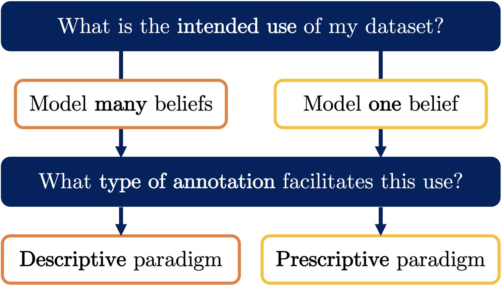

Labelled data is the foundation of most natural language processing tasks. However, labelling data is difficult and there often are diverse valid beliefs about what the correct data labels should be. So far, dataset creators have acknowledged annotator subjectivity, but rarely actively managed it in the annotation process. This has led to partly-subjective datasets that fail to serve a clear downstream use. To address this issue, we propose two contrasting paradigms for data annotation. The descriptive paradigm encourages annotator subjectivity, whereas the prescriptive paradigm discourages it. Descriptive annotation allows for the surveying and modelling of different beliefs, whereas prescriptive annotation enables the training of models that consistently apply one belief. We discuss benefits and challenges in implementing both paradigms, and argue that dataset creators should explicitly aim for one or the other to facilitate the intended use of their dataset. Lastly, we conduct an annotation experiment using hate speech data that illustrates the contrast between the two paradigms.
Many natural language processing (NLP) tasks are subjective, in the sense that there are diverse valid beliefs about what the correct data labels should be. Some tasks, like hate speech detection, are highly subjective: different people have very different beliefs about what should or should not be labelled as hateful (Talat, 2016; Salminen et al., 2019; Davani et al., 2021a), and while some beliefs are more widely accepted than others, there is no single objective truth. Other examples include toxicity (Sap et al., 2019; Sap et al., 2021), harassment (Al Kuwatly et al., 2020), harmful content (Jiang et al., 2021) and stance detection (Luo et al., 2020; AlDayel and Magdy, 2021) as well as sentiment analysis (Kenyon-Dean et al., 2018; Poria et al., 2020). But even for seemingly objective tasks like part-of-speech tagging, there is subjective disagreement between annotators (Plank et al., 2014b).

In this article, we argue that dataset creators should consider the role of annotator subjectivity in the annotation process and either explicitly encourage it or discourage it. Annotators may subjectively disagree about labels (e.g., for hate speech) but dataset creators can and should decide, based on the intended downstream use of their dataset, whether they want to a) capture different beliefs or b) encode one specific belief in their data.
As a framework, we propose two contrasting data annotation paradigms. Each paradigm facilitates a clear and distinct downstream use. The descriptive paradigm encourages annotator subjectivity to create datasets as granular surveys of individual beliefs. Descriptive data annotation thus allows for the capturing and modelling of different beliefs. The prescriptive paradigm, on the other hand, discourages annotator subjectivity and instead tasks annotators with encoding one specific belief, formulated in the annotation guidelines. Prescriptive data annotation thus enables the training of models that seek to consistently apply one belief. A researcher may, for example, want to model different beliefs about hate speech ( descriptive paradigm), while a content moderation engineer at a social media company may need models that apply their content policy ( prescriptive paradigm).
Neither paradigm is inherently superior, but explicitly aiming for one or the other is beneficial because it makes clear what an annotated dataset can and should be used for. For example, data annotated under the descriptive paradigm can provide insights into different beliefs (§2.1), but it cannot easily be used to train models with one pre-specified behaviour (§3.1). By contrast, leaving annotator subjectivity unaddressed, as has mostly been the case in NLP so far, leads to datasets that neither capture an interpretable diversity of beliefs nor consistently encode one specific belief; an undesirable middle ground without a clear downstream use.11 1 See Appx. A for a selective overview of existing datasets.
The two paradigms are applicable to all data annotation. They can be used to compare existing datasets, and to make and communicate decisions about how new datasets are annotated as well as how annotator disagreement can be interpreted. We hope that by naming and explaining the two paradigms, and by discussing key benefits and challenges in their implementation, we can support more intentional annotation process design, which will result in more useful NLP datasets.
Our use of the terms descriptive and prescriptive aligns with their use in both linguistics and ethics. In linguistics, descriptivism studies how language is used, whereas prescriptive grammar declares how language should be used (Justice, 2006). Descriptive ethics studies the moral judgments that people make, while prescriptive ethics considers how people ought to act (Thiroux and Krasemann, 2015). Accordingly, descriptive data annotation surveys annotators’ beliefs, whereas prescriptive data annotation aims to encode one specific belief, which is formulated in the annotation guidelines.
Descriptive data annotation captures a multiplicity of beliefs in data labels, much like a very granular survey would. The distribution of data labels across annotators and examples can therefore provide insights into the beliefs of annotators, or the larger population they may represent. For example, descriptive data annotation has shown that non-Black annotators are more likely to rate African American English as toxic (Sap et al., 2019; Sap et al., 2021), and that people who identify as LGBTQ+ or young adults are more likely to rate random social media comments as toxic (Kumar et al., 2021). Similar correlations between sociodemographic characteristics and annotation outcomes have been found in stance (Luo et al., 2020), sentiment (Diaz et al., 2018) and hate speech detection (Talat, 2016).
Even very subjective tasks may have clear-cut entries on which most annotators agree. For example, crowd workers tend to agree more on the extremes of a hate rating scale (Salminen et al., 2019), and datasets which consist of clear hate and non-hate can have very high levels of inter-annotator agreement, even with minimal guidelines (Röttger et al., 2021). Descriptive data annotation can help to identify which entries are more subjective. Jiang et al. (2021), for instance, find that perceptions about the harmfulness of sexually explicit language vary strongly across the eight countries in their sample, whereas support for mass murder or human trafficking is seen as very harmful across all countries.
Annotator-level labels from descriptive data annotation have been shown to be a rich source of information for model training. First, they can be used to separately model annotators’ beliefs. For less subjective tasks such as question answering, this has served to mitigate undesirable annotator biases (Geva et al., 2019). Davani et al. (2021b) reframe and expand on this idea for more subjective tasks like abuse detection, showing that multi-annotator model architectures outperform standard single-label approaches on single label prediction. Second, instead of modelling each annotator separately, other work has grouped them into clusters based on sociodemographic attributes (Al Kuwatly et al., 2020) or polarisation measures derived from annotator labels (Akhtar et al., 2020; Akhtar et al., 2021), with similar results. Third, models can be trained directly on soft labels (i.e., distributions of labels given by annotators), rather than hard one-hot ground truth vectors (Plank et al., 2014a; Jamison and Gurevych, 2015; Uma et al., 2020; Fornaciari et al., 2021).
Descriptive data annotation facilitates model evaluation that accounts for different beliefs about how a model should behave (Basile et al., 2021b; Uma et al., 2021). This is particularly relevant when deploying NLP systems for practical tasks such as content moderation, where user-facing performance needs to be considered (Gordon et al., 2021). To this end, comparing a model prediction to a descriptive label distribution, the crowd truth (Aroyo and Welty, 2015), can help estimate how acceptable the prediction would be to users (Alm, 2011). Gordon et al. (2022) operationalise this idea by introducing jury learning, a recommender system approach to predicting how a group of annotators with specified sociodemographic characteristics would judge different pieces of content.
The survey-like benefits of descriptive data annotation correspond to survey-like challenges. First, dataset creators must decide who their data aims to represent, by establishing a clear population of interest. Arora et al. (2020), for example, ask women journalists to annotate harassment targeted at them. Talat (2016) recruits feminist activists as well as crowd workers. Second, dataset creators must consider whether representativeness can practically be achieved. To capture a representative distribution of beliefs for each entry requires dozens, if not hundreds of annotators recruited from the population of interest. Sap et al. (2021), for example, collect toxicity labels from 641 annotators, but only for 15 examples. Other datasets generally use much fewer annotators per entry (see Appx. A) and therefore cannot be considered representative in the sense that large (i.e., many-participant) surveys are. A potential approach to mitigating this issue in modelling annotator beliefs is by introducing information sharing across groups of annotators (e.g. based on sociodemographics), where annotator behaviour updates group-specific priors rather than being considered in isolation, and thus fewer annotations are needed from each annotator (Gordon et al., 2022).
In the descriptive paradigm, the absence of a (specified) ground truth label complicates the interpretation of any observed annotator disagreement: it may be due to a genuine difference in beliefs, which is desirable in this paradigm, or due to undesirable annotator error (Pavlick and Kwiatkowski, 2019; Basile et al., 2021a; Leonardelli et al., 2021). The same issue applies to inter-annotator agreement metrics like Fleiss’ Kappa. When subjectivity is encouraged, such metrics can at best measure task subjectiveness, but not task difficulty, annotator performance, or dataset quality (Zaenen, 2006; Alm, 2011).
Descriptive annotation has clear downstream uses (§2.1) but it is fundamentally misaligned with standard NLP methods that rely on single gold standard labels. When datasets are constructed to be granular surveys of beliefs, reducing those beliefs to a single label, through majority voting or otherwise, goes directly against that purpose. Aggregating labels conceals informative disagreements (Leonardelli et al., 2021; Basile et al., 2021b) and risks discarding minority beliefs (Prabhakaran et al., 2021; Basile et al., 2021a).
Encoding one specific belief in a dataset through data annotation is difficult (§3.2) but advantageous for many practical applications. Social media companies, for example, moderate content on their platforms according to specific and extensive content policies.22 2 In March 2021, a whistleblower shared 300-page content guidelines used by Facebook moderators (Hern, 2021). Therefore, they need data annotated in accordance with those policies to train their content moderation models. This illustrates that even for highly subjective tasks, where different model behaviours are plausible and valid, one specific behaviour may be practically desirable. Prescriptive data annotation specifies such desired behaviours in datasets for model training and evaluation.
In the prescriptive paradigm, annotator disagreements are a call to action because they indicate that a) the annotation guidelines were not correctly applied by annotators or b) the guidelines themselves were inadequate. Annotator errors can be found using noise identification techniques (Hovy et al., 2013; Zhang et al., 2017; Paun et al., 2018; Northcutt et al., 2021, e.g.,), corrected by expert annotators (Vidgen and Derczynski, 2020; Vidgen et al., 2021a) or their impact mitigated by label aggregation. Guidelines which are unclear or incomplete need to be clarified or expanded by dataset creators, which may require iterative approaches to annotation (Founta et al., 2018; Zeinert et al., 2021). Therefore, quality assurance under the prescriptive paradigm is a laborious but structured process, with inter-annotator agreement as a useful, albeit noisy, measure of dataset quality.
In the prescriptive paradigm, the one belief that annotators are tasked with applying is made visible and explicit in the annotation guidelines. Well-formulated guidelines should give clear instructions on how to decide between different classes, along with explanations and illustrative examples. This creates accountability, in that people can review, challenge and disagree with the formulated belief. Like data statements (Bender and Friedman, 2018), prescriptive annotation guidelines can provide detailed insights into how datasets were created, which can then inform their downstream use.
Creating guidelines for prescriptive data annotation is difficult because it requires topical knowledge and familiarity with the data that is to be annotated. Guidelines would ideally provide a clear judgment on every possible entry, but in practice, such perfectly comprehensive guidelines can only be approximated. Even extensive legal definitions of hate speech leave some room for subjective interpretation (Sellars, 2016). Further, creating guidelines for prescriptive data annotation requires deciding which one belief to encode in the dataset. This can be a complex process that risks disregarding non-majority beliefs if marginalised people are not included in it (Raji et al., 2020).
Annotators need to be familiar with annotation guidelines to apply them correctly, which may require additional training, especially if guidelines are long and complex. This is reflected in an increasing shift in the literature towards using annotators with task-relevant experience over non-trained crowd workers (Basile et al., 2019; Röttger et al., 2021; Vidgen et al., 2021a, e.g.). During annotation, annotators will need to refer back to the guidelines, which requires giving them sufficient time per entry and providing a well-designed annotation interface.
Annotator subjectivity can be discouraged, but not eliminated. Inevitable gaps in guidelines leave annotators no choice but to apply their personal judgement for some entries, and even when there is explicit guidance, implicit biases may persist. Sap et al. (2019), for example, demonstrate racial biases in hate speech annotation, and show that targeted annotation prompts can reduce these biases but not definitively eliminate them. To address this issue, dataset creators should work with groups of annotators that are diverse in terms of sociodemographic characteristics and personal experiences, even when annotator subjectivity is discouraged.
To illustrate the contrast between the two paradigms, we conducted an annotation experiment. 60 annotators were randomly assigned to one of three groups of 20. Each group was given different guidelines to label the same 200 Twitter posts, taken from a corpus annotated for hate speech by Davidson et al. (2017), as either hateful or non-hateful. G1, the descriptive group, received a short prompt which directed them to apply their subjective judgement (‘Do you personally feel this post is hateful?’). G2, the prescriptive group, received a short prompt which discouraged subjectivity (‘Does this post meet the criteria for hate speech?’), along with detailed annotation guidelines. G3, the control group, received the prescriptive prompt and a short definition of hate speech but no further guidelines. This is to control for the difference in length and complexity of annotation guidelines between G1 and G2.
We evaluate average percentage agreement and Fleiss’ to measure dataset-level inter-annotator agreement in each group (Table 1). To test for significant differences in agreement between groups, we use confidence intervals computed with a 1000-sample bootstrap.
| Group | Avg. % Agree. | Fleiss’ |
|---|---|---|
| G1 - Descriptive | 73.90 | 0.20 |
| G2 - Prescriptive | 93.72 | 0.78 |
| G3 - Control | 72.50 | 0.15 |
Agreement is very low in the descriptive group G1 (), which suggests that annotators hold varied beliefs about which posts are hateful. However, agreement is significantly higher () in G2 (), which suggests that a prescriptive approach with detailed annotation guidelines can successfully induce annotators to apply a specified belief rather than their subjective view. Further, agreement in the control group G3 () is as low as in descriptive G1, which suggests that comprehensive guidelines are instrumental in facilitating high agreement in the prescriptive paradigm. G1 and G3 also do not differ systematically on which posts annotators disagree on, which suggests that annotators with little prescriptive instruction (G3) tend to apply their subjective views (like G1).
For details on our dataset and annotators, see the data statement (Bender and Friedman, 2018) in Appendix B. Annotation prompts are given in Appendix C. Full guidelines, annotated data and code are available on GitHub.
In this article, we named and explained two contrasting paradigms for data annotation. The descriptive paradigm encourages annotator subjectivity to create datasets as granular surveys of individual beliefs, which can then be analysed and modelled. The prescriptive paradigm tasks annotators with encoding one specific belief formulated in the annotation guidelines, to enable the training of models that seek to apply that one belief to unseen data. Dataset creators should explicitly aim for one paradigm or the other to facilitate the intended downstream use of their dataset, and to document for the benefit of others how exactly their dataset was annotated. We discussed benefits and challenges in implementing both paradigms, and conducted an annotation experiment that illustrates the contrast between them. We hope that the two paradigms can support more intentional annotation process design and thus facilitate the creation of more useful NLP datasets.
Paul Röttger was funded by the German Academic Scholarship Foundation. Bertie Vidgen and Paul Röttger were both supported by The Alan Turing Institute and Towards Turing 2.0 under the EPSRC Grant EP/W037211/1. Dirk Hovy received funding from the European Research Council (ERC) under the European Union’s Horizon 2020 research and innovation program (grant agreement No. 949944). He is a member of the Data and Marketing Insights (DMI) Unit of the Bocconi Institute for Data Science and Analysis (BIDSA). Janet B. Pierrehumbert was supported by EPSRC Grant EP/T023333/1. We thank the Milan NLP Group, the Groningen Computational Linguistics Group as well as the Pierrehumbert Language Modelling Group for helpful comments and all reviewers for their constructive feedback.
This appendix gives a selective overview of how existing NLP dataset work has (or has not) engaged with annotator subjectivity. For reasons of scope, we focus on 11 English-language datasets annotated for hate speech and other forms of abuse. Entries are sorted from most descriptive to most prescriptive annotation, based on our assessment of information made available by the dataset creators.
Sap et al. (2019) and Sap et al. (2021) annotate toxicity. They do not state explicitly that they encourage annotator subjectivity, but their annotation prompts clearly do. Each entry is labelled by up to 641 annotators. Overall, they are very aligned with the descriptive paradigm.
Kumar et al. (2021) annotate toxicity and types of toxicity. They do not state explicitly that they encourage annotator subjectivity, but their annotation prompts clearly do. Each entry is labelled by five annotators. Overall, they are very aligned with the descriptive paradigm.
Cercas Curry et al. (2021) annotate abuse. They gather ‘views of expert annotators’ based on guidelines that allow for significant subjectivity and do not attempt to resolve disagreements, but also do not explicitly encourage annotator subjectivity. On average, each entry is labelled by around three annotators. Overall, they are moderately aligned with the descriptive paradigm.
Talat and Hovy (2016) annotate hate speech. They provide annotators with 11 fine-grained criteria for hate speech, but several criteria invite subjective responses (e.g., ‘uses a problematic hashtag’). Each entry is labelled by up to three annotators. Overall, they are not clearly aligned with either paradigm.
Davidson et al. (2017) annotate hate speech. They provide annotators with a brief definition of hate speech and an explanatory paragraph, but their definition also includes subjective criteria like perceived ‘intent’. Most entries are labelled by three annotators. Overall, they are not clearly aligned with either paradigm.
Zampieri et al. (2019) annotate offensive content. They provide annotators with some formal criteria for offensiveness (e.g., ‘use of profanity’), but as a whole their guidelines are very brief. Each entry is labelled by up to three annotators. Overall, they are moderately aligned with the prescriptive paradigm.
Founta et al. (2018) annotate abuse. They provide annotators with fine-grained definitions for each category and iterate on their taxonomy to facilitate more agreement, but do not share comprehensive guidelines. Each entry is labelled by five annotators. Overall, they are moderately aligned with the prescriptive paradigm.
Caselli et al. (2020) annotate abuse. They provide annotators with a brief fine-grained decision tree with the explicit intent of reducing annotator subjectivity, and discuss disagreements to resolve them. Each entry is labelled by up to three annotators. Overall, they are moderately aligned with the prescriptive paradigm.
Vidgen et al. (2021b) annotate hate speech. They provide annotators with fine-grained definitions for each category as well as very detailed annotation guidelines, and disagreements are resolved by an expert. Each entry is labelled by up to three annotators. Overall, they are very aligned with the prescriptive paradigm.
Vidgen et al. (2021a) annotate abuse.
They provide annotators with fine-grained definitions for each category as well as very detailed annotation guidelines, and they use expert-driven group adjudication to resolve disagreements.
Each entry is labelled by up to three annotators.
Overall, they are very aligned with the prescriptive paradigm.
Following Bender and Friedman (2018), we provide a data statement, which documents the generation and provenance of the dataset used for our annotation experiment.
To create our dataset, we sampled 200 Twitter posts from a larger corpus annotated for hateful content by Davidson et al. (2017). Of the posts we sampled, 100 were originally annotated as hateful and 100 as non-hateful by majority vote between three annotators. We sampled only from those posts that had some disagreement among their annotators (i.e., two out of three rather than unanimous agreement), to encourage disagreement in our experiment. The purpose of our 200-post dataset is to enable the annotation experiment presented in §1, which illustrates the contrast between the descriptive and prescriptive data annotation paradigms.
The dataset contains English-language text posts only.
All speakers are Twitter users. Davidson et al. (2017) do not share any information on their demographics.
We recruited three groups of 20 annotators using Amazon’s Mechanical Turk crowdsourcing marketplace.33 3 https://www.mturk.com/. Annotators were made aware that the task contained instances of offensive language before starting their work, and they could withdraw at any point throughout the work.
All annotators were at least 18 years old when they started their work, and we recruited only annotators that were based in the UK. This was to facilitate comparability across groups of annotators. For each group, we recruited 10 male and 10 female annotators, based on self-reported gender. This was to encourage disagreement within groups, based on the assumption that men would on average disagree more about hateful content with women than with other men, and vice versa. No further annotator demographics were recorded.
All annotators were compensated for their work at a rate of at least £16 per hour. The rate was set 50% above the London living wage (£10.85), although all work was completed remotely.
All entries in our dataset were originally posted to Twitter and then collected by Davidson et al. (2017), who do not share when the posts were made.
All entries in our dataset are individual Twitter text posts, with a length of 140 characters or less. We perform only minimal text cleaning, replacing user mentions (e.g., "@Obama") with "[USER]" and URLs with "[URL]".
Davidson et al. (2017) make the Twitter data they collected available for further research use via GitHub under an MIT license.44 4 https://github.com/t-davidson/hate-speech-and-offensive-language Our re-annotated subset of the data is made available under CC0-1.0 license at github.com/paul-rottger/annotation-paradigms, so that the results of our experiment can be reproduced.
We received approval for our experiment and the data annotation it entailed from our institution’s ethics review board.
The three groups of annotators in our experiment all annotated the same data in the same order, but each group received different annotation prompts. The full annotation guidelines for G2 are available at github.com/paul-rottger/annotation-paradigms.
“Imagine you come across the post below on social media. Do you personally feel this post is hateful? We want to understand your own opinions, so try to disregard any impressions you might have about whether other people would find it hateful.”
“Imagine you come across the post below on social media. Does this post meet the criteria for hate speech? We are trying to collect objective judgments, so try to disregard any feelings you might have about whether you personally find it hateful.
Click here to view the criteria: LINK”
“Imagine you come across the post below on social media. Does this post meet the criteria for hate speech? A post is considered hate speech if it is 1) abusive and 2) targeted against a protected group (e.g., women) or at its members for being a part of that group.”